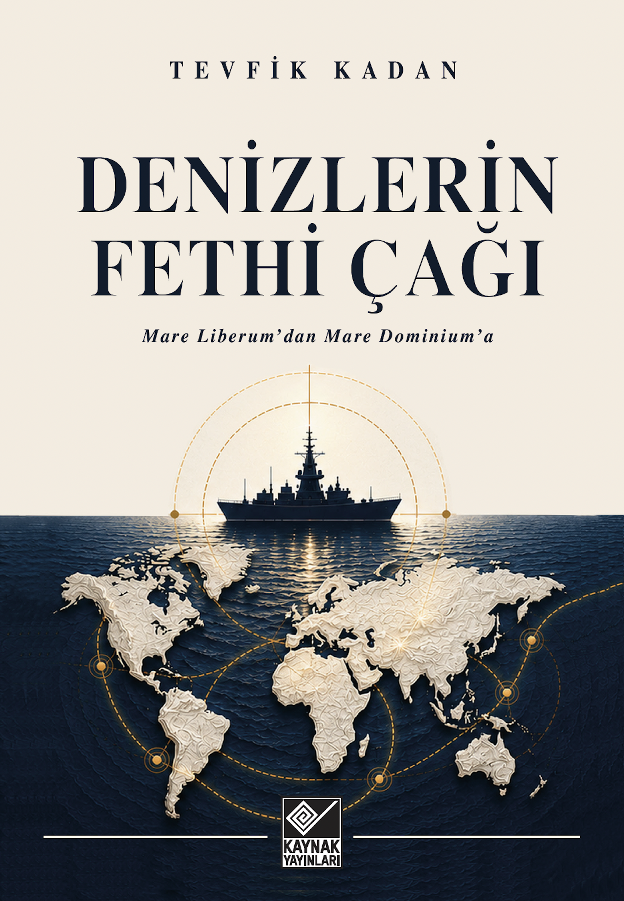

Book Review
Denizlerin Fethi Çağı
Adil Hacıömeroğlu reviews the book’s research, sources, structure and accessible style.
Adil Hacıömeroğlu
Read ↗Turkish journalist, author and researcher focusing on maritime geopolitics, maritime strategy and the law of the sea.
A study of how technological change and shifting power relations may alter the practical meaning of maritime freedom.

The book traces the long tension between Mare Liberum and Mare Clausum, and asks whether new technologies are changing the material conditions that historically sustained the freedom of the seas.
It brings together maritime law, sea power, strategic chokepoints, emerging technologies and the changing balance of global power.
What happens when technology makes it possible for states to exercise effective control over seas that international law still defines as free?
This question lies at the center of the book’s Mare Dominium framework.
Legal freedom at sea may increasingly coexist with forms of effective technological and strategic control.
For centuries, the practical difficulty of controlling vast maritime spaces helped sustain the principle of the freedom of the seas. Satellites, networked sensors, unmanned systems, long-range precision weapons and persistent surveillance are changing that material reality.
Mare Dominium is used as a framework for examining how technology and power can create new forms of effective control even where formal legal regimes remain unchanged.
Tevfik Kadan is a Turkish journalist, author and researcher specializing in maritime geopolitics and strategic affairs.
He is Editor-in-Chief of Aydınlık newspaper. His work focuses on sea power, maritime security, the law of the sea, freedom of navigation, strategic chokepoints and the transformation of the international maritime order.
His 2026 book Denizlerin Fethi Çağı: Mare Liberum'dan Mare Dominium'a brings together historical, legal, technological and geopolitical perspectives to examine whether the material conditions that sustained the freedom of the seas are beginning to change.
The site brings together the recurring themes behind Kadan’s work on power, law, technology and the sea.
How naval capability, geography and access to maritime spaces shape strategic influence.
UNCLOS, maritime jurisdiction, navigation regimes and the tension between legal principle and state practice.
The growing importance of straits, canals, ports and narrow maritime passages in global competition.
How sensors, unmanned systems and long-range capabilities change the practical limits of control at sea.
Selected independent reviews, interviews and media appearances related to Denizlerin Fethi Çağı and the Mare Dominium thesis.
Journalist Feyziye Özberk examines the book in the context of the changing balance of maritime power, describing it as a concise, well-sourced study that brings together current geopolitical developments and maritime strategy.
Read the review ↗Adil Hacıömeroğlu reviews the book’s research, sources, structure and accessible style.
A conversation on unmanned maritime systems, energy routes, Blue Homeland and the emerging contest for maritime control.
An English-language discussion of the book’s central arguments and the changing international maritime order.
A wide-ranging interview on the book, maritime geopolitics and the concept of Mare Dominium.
Hormuz, the Turkish Straits, Montreux, MİLGEM and the technological transformation of maritime power.
The book featured in SeaConnect’s maritime industry book section shortly after publication.
Mehmet Ali Güller discusses the book in the wider context of global power shifts and maritime competition.
The first edition is currently available in Turkish. Purchase the book directly from the publisher or major Turkish booksellers.
Official author email: tevfikkadan@gmail.com